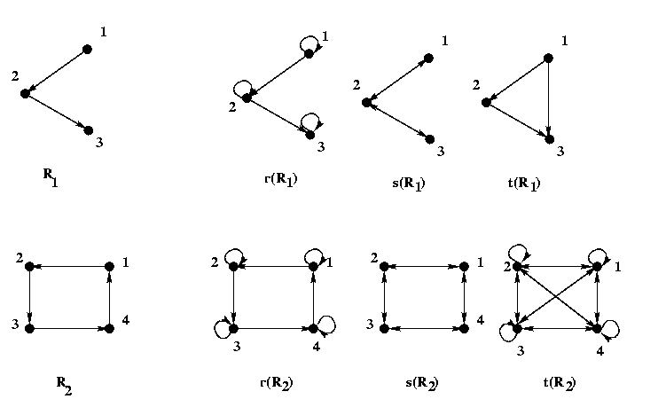
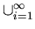

Closure of Binary Relation
Subjects to be Learned
- reflexive closure
- symmetric closure
- transitive closure
- properties of closure
Contents
In our everyday life we often talk about parent-child relationship.
This is a binary relation on the set of
people in the world, dead or alive. Also we are often interested in
ancestor-descendant relations.
Although the latter relation can be obtained from the former, hence it is
redundant in that sense, we do use ancestor-descendant relations which give us
necessary information more directly.
This ancestor-descendant relation relates two people if there is a sequence of
parent-child relations from one to the other. It includes the parent-child
relation as a
subset. The ancestor-descendant relation is an example of the closure of
a relation, in particular the transitive closure of the parent-child relation.
In general, the closure of a relation is
the smallest extension of the relation
that has a certain specific property such as the reflexivity, symmetry or transitivity.
Formally they are
defined as follows:
Definition (reflexive closure): A relation
R'
is the reflexive closure
of a relation R if and only if
(1) R' is reflexive,
(2)
R
 R',
and
R',
and
(3) for any relation
R'',
if
R
R''
and
R''
is reflexive, then
R'
R'' , that is, R' is the smallest
relation that satisfies (1) and (2).
Example: Let R be the less-than relation on the set of integers I,
that is
R = { < a, b> | a  I
I
 b
I
a < b }.
b
I
a < b }.
Then the reflexive closure r(R) of R
is the union of R and the equality
relation on I, that is
r(R) = { <a, b> | a
I
b
I
a
 b }
b }
The digraph of the reflexive closure of a relation is obtained from the digraph
of the relation
by adding
a self-loop at each vertex if one is already not there.
Symmetric and transitive closures can be defined similarly.
Definition (symmetric closure): A relation
R'
is the symmetric
closure of a relation R if and only if
(1) R' is symmetric,
(2) R
R',
and
(3) for any relation
R'',
if
R
R'',
and
R''
is symmetric, then
R'
R'' , that is, R' is the smallest
relation that satisfies (1) and (2).
Example: Let R be the less-than relation on the set of integers I.
Then the symmetric closure of R, denoted by s(R) is
s(R) = { <a, b> | a
I
b
I
[ a
<
b
 a
>
b ] }
that is
{ <a, b> | a
I
b
I
a
a
>
b ] }
that is
{ <a, b> | a
I
b
I
a
 b }
b }
The digraph of the symmetric closure of a relation is obtained from the digraph
of the relation
by adding
for each arc the arc in the reverse direction if one is already not there.
Definition (transitive closure): A relation
R'
is the transitive
closure of a relation R if and only if
(1) R' is transitive,
(2) R
R',
and
(3) for any relation
R'',
if
R
R''
and
R''
is transitive, then
R'
R'' , that is, R' is the smallest
relation that satisfies (1) and (2).
Examples: The transitive closure of a parent-child relation is
the ancestor-descendant relation as mentioned above, and that of
the less-than relation on I is the less-than relation itself.
The digraph of the transitive closure of a relation is obtained from the digraph
of the relation
by adding for each directed path the arc that shunts the path
if one is already not there.
Two more examples of closures are given below in terms of digraphs.
The arrows with two heads represent arrows going in opposite directions.

Properties of Closure
The closures have the following properties.
They are stated here as theorems without proof.
Theorem:
Let E denote the equality relation, and Rc the inverse
relation of binary relation R, all on a set A,
where
Rc = { < a, b > | < b, a >
R}
.
Then
1. r(R) = R
 E
E
2. s(R) = R
Rc
3. t(R) =

Ri
=  Ri,
if
|A| = n.
Ri,
if
|A| = n.
4. R is reflexive if and only if r(R) = R.
5. R is symmetric if and only if s(R) = R.
6. R is transitive if and only if t(R) = R.
Test Your Understanding of Closure
Indicate which of the following statements are correct and which are not.
Click True or False , then Submit. There are two sets of questions.
Next -- Equivalence Relation
Back to Schedule
Back to Table of Contents